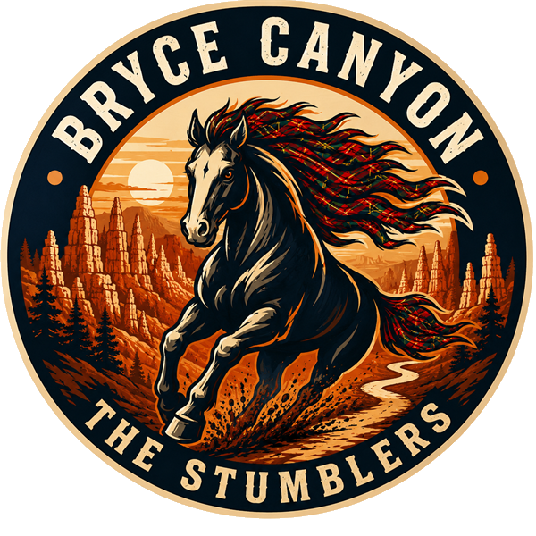
Race 2 · Bryce Canyon Ultras Half Marathon
For the second Stumble, four Stumblers — Ben, Hamish, Meg and Ani — lined up at 8am at Lucky 7 Ranch for the Half Marathon at the Bryce Canyon Ultras in Hatch, Utah.
It was a tough race: 14 miles of trail at over 7,000 ft, with nearly 2,000 ft of climbing. But all four made it to the finish!
This was Ben's revenge. At the 2025 Stirling Stumble he lost the 10K to Hamish by five seconds on Strava (although he claimed he crossed the line first). At Bryce there was no argument: Ben finished half a minute ahead. And allegedly Ben was going slowly during the race to check on Hamish (hard to believe).
Cheering them on were Abi, baby Robin, Fin, Eve and Leah.
Lucky 7 Ranch, Hatch, Utah, about 30 minutes from Bryce Canyon National Park.
Bryce Canyon Ultras, organised by Aravaipa Running.
| # | Runner | Time |
|---|---|---|
| 1 | Ben | 2:57:18 |
| 2 | Hamish | Made it! |
| 3= | Meg | Made it! |
| 3= | Ani | Made it! |
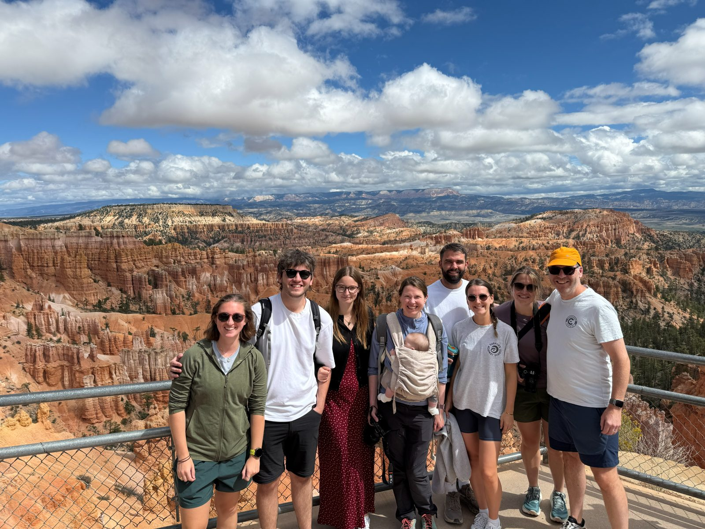
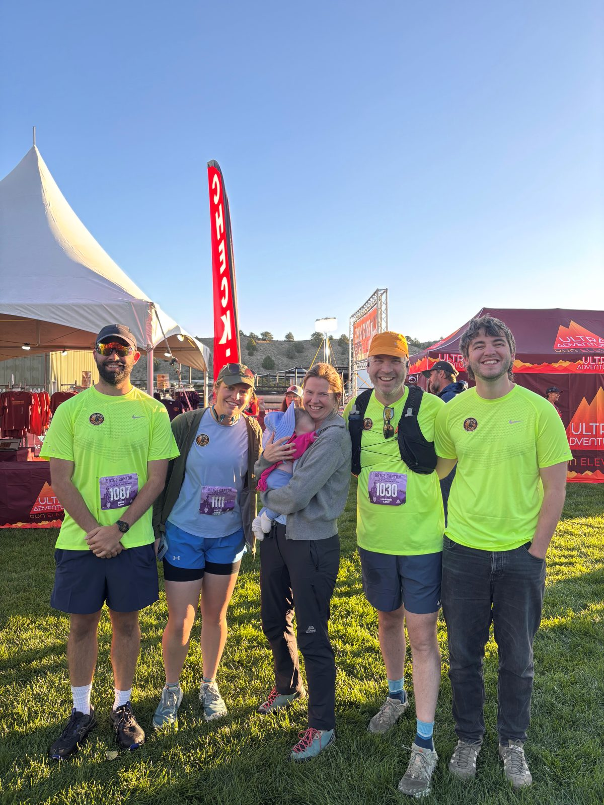
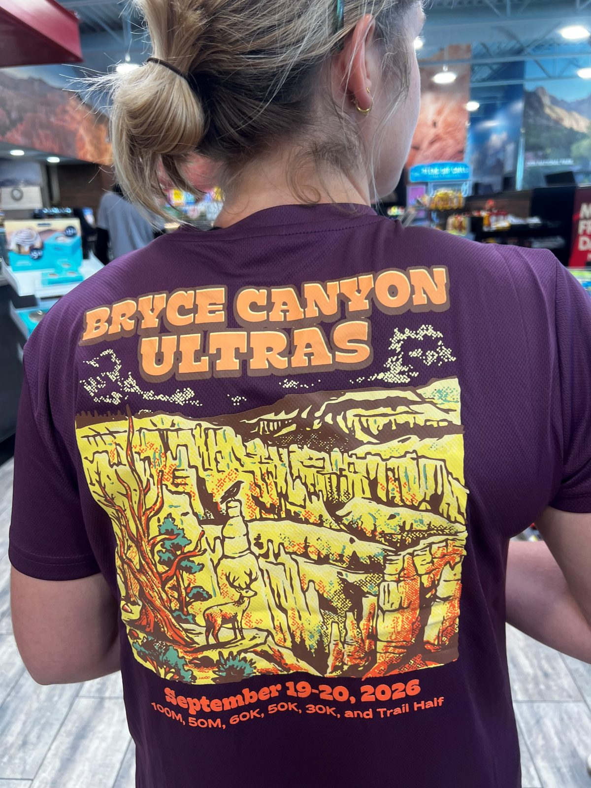
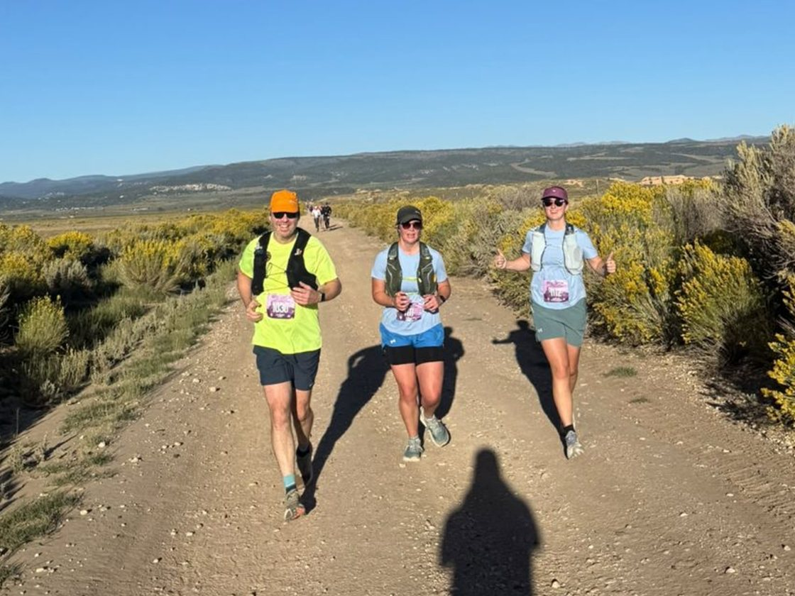
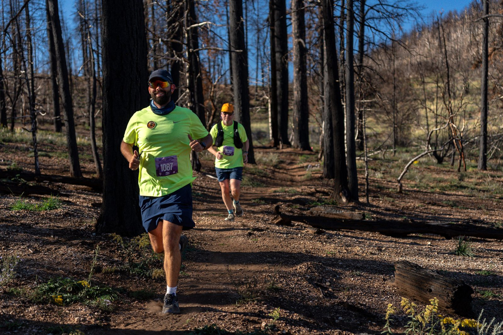
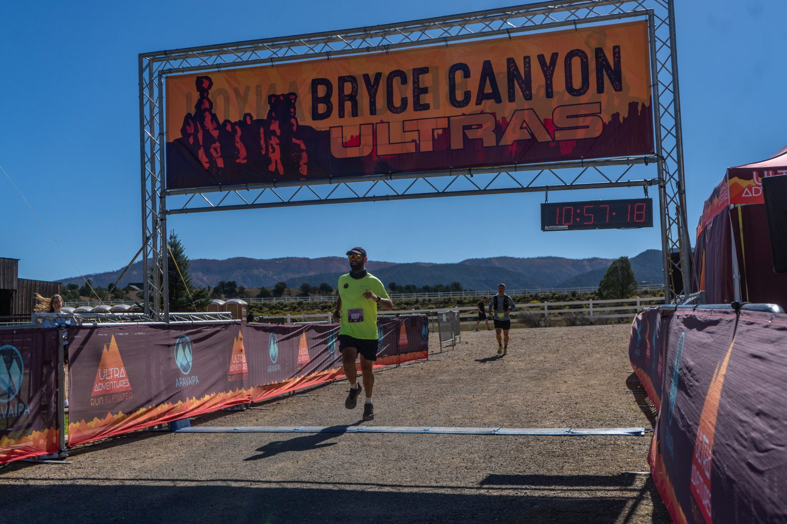
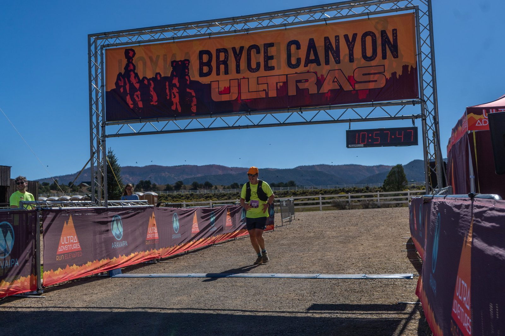
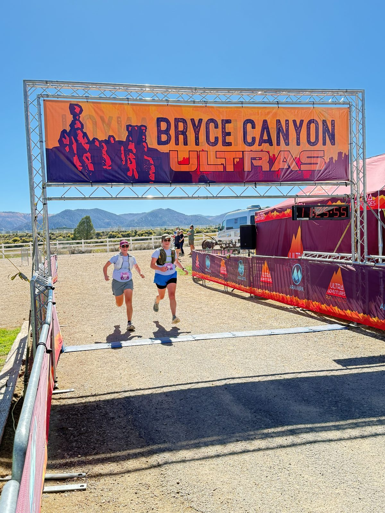
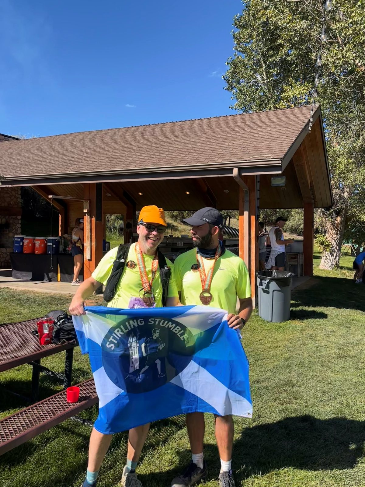
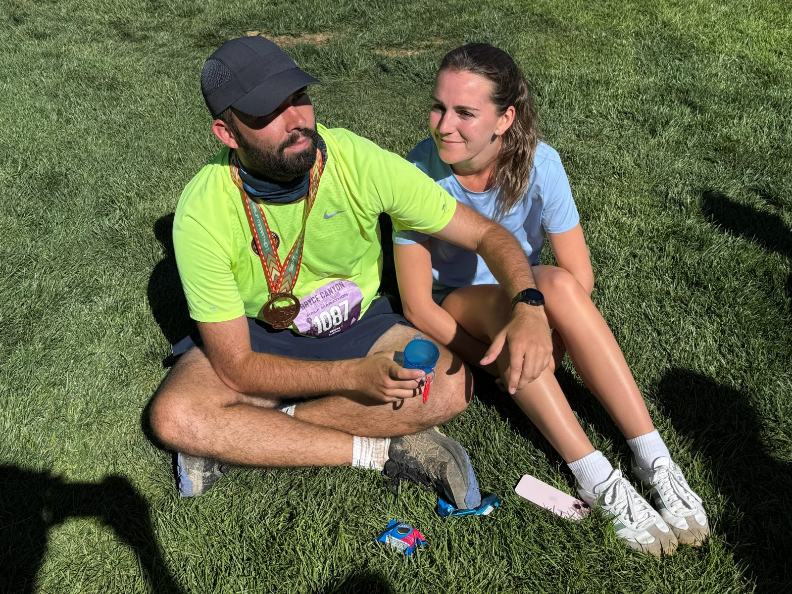
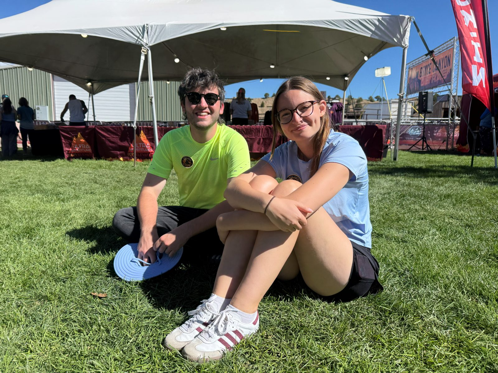
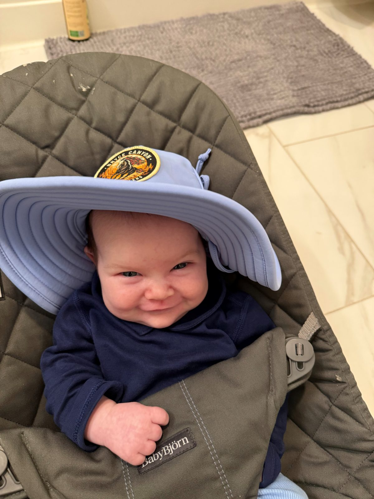